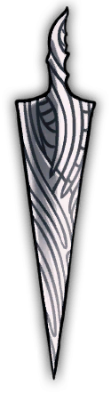

Teknik Informatika
Institut Teknologi Sepuluh Nopember
A short Hollow Knight inspired portfolio project

A record of the vessel, as written
Rizqi Arya Kuskhilbyano
Informatics Engineering student at Institut Teknologi Sepuluh Nopember (ITS), balancing core computer science coursework with hands-on systems and creative projects.
Hobbies of mine includes: Competing competitively in online games, watching various media, learning something new.
Education History
Benches along the way collects personal experience
Click or hover over a charm to expand
Reach out to me with: